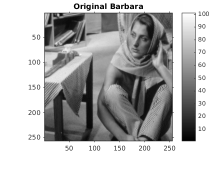
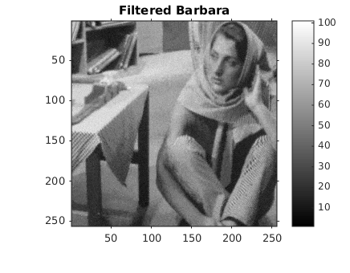
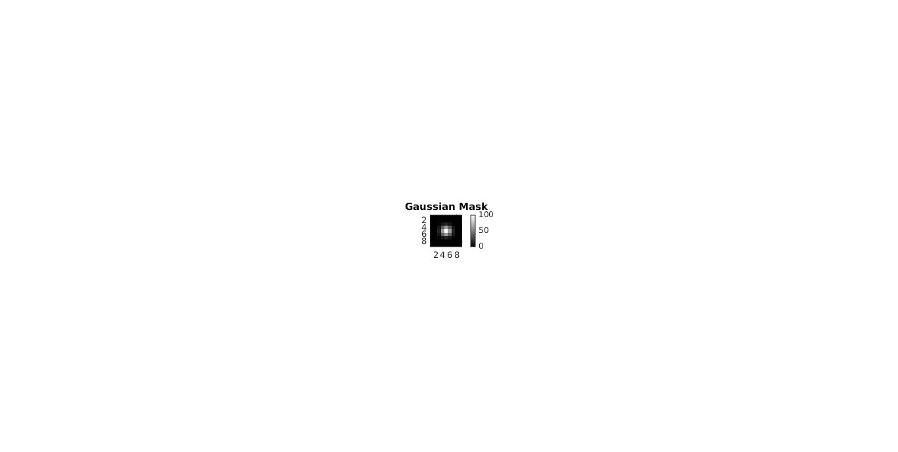

Contents
MyMainScript
tic;
Setting global data
curDir = pwd;
Input files
inp_imgFil = fullfile(curDir, '..', 'data', 'barbara.mat');
Taking inputs
load(inp_imgFil); minOrigI = min(imageOrig(:)); % 0 for barbara maxOrigI = max(imageOrig(:)); % 100 for barbara
Subsampling
imageOrig = imageOrig(1:2:end, 1:2:end); filt = fspecial('gaussian', [5 5], 0.66); imageOrig = imfilter(imageOrig, filt, 'same');
Noisifying
noisedImage = myNoisify(imageOrig); noisedImage = myRescaleIntensities(noisedImage, minOrigI, maxOrigI);
Apply patch-based filtering
% Takes ~ 15 minutes to run, use saved .mat file instead % im_out = myPatchBasedFiltering(noisedImage, 25, 9, 1); inp_mat = fullfile(curDir, '..', 'data', 'barbaraFiltered.mat'); load(inp_mat); % Optimal parameters are: h = 1, gau_var = 1 % Window size = 25 and patch size = 9 were used.
Mask for isotropizing gaussian as an image
patch_size = 9;
gau = fspecial('gaussian', [patch_size patch_size], 1);
gau = myRescaleIntensities(gau, minOrigI, maxOrigI);
Optimal parameter values
h_opt = 1;
RMSD_opt = myRMSD(im_out, imageOrig)
RMSD_opt =
6.0022
Display the images
Display the original image (subsampled)
figure('Name', 'Original Barbara'), imshow(imageOrig, gray(100)), colorbar, truesize; title('Original Barbara') % Display the noise-added image figure('Name', 'Noisy Barbara'), imshow(noisedImage, gray(100)), colorbar, truesize; title('Noisy Barbara') % Display the filtered image figure('Name', 'Filtered Barbara'), imshow(im_out, gray(100)), colorbar, truesize; title('Filtered Barbara') % Display the Gaussian mask figure('Name', 'Gaussian Mask', 'Position', [0, 0, 1000, 1000]), imshow(gau, [minOrigI maxOrigI]), colorbar; title('Gaussian Mask')  
Save the images
out_mat = fullfile(curDir, '..', 'data', 'barbaraFiltered.mat'); save(out_mat, 'im_out'); out_png_noisy = fullfile(curDir, '..', 'images', 'barbaraNoisy.png'); imwrite(noisedImage, gray(100), out_png_noisy); out_png = fullfile(curDir, '..', 'images', 'barbaraFiltered.png'); imwrite(im_out, gray(100), out_png); toc;
Elapsed time is 3.113299 seconds.